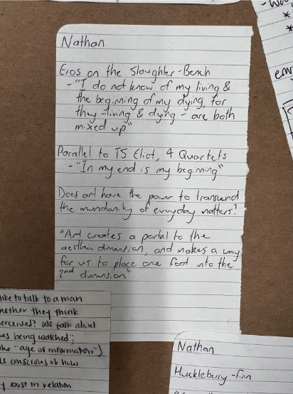
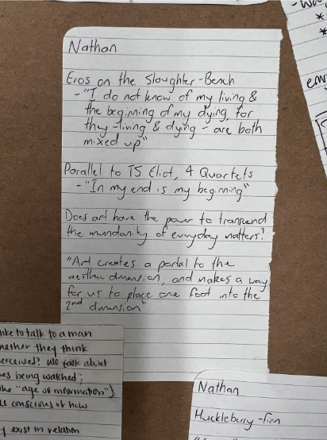
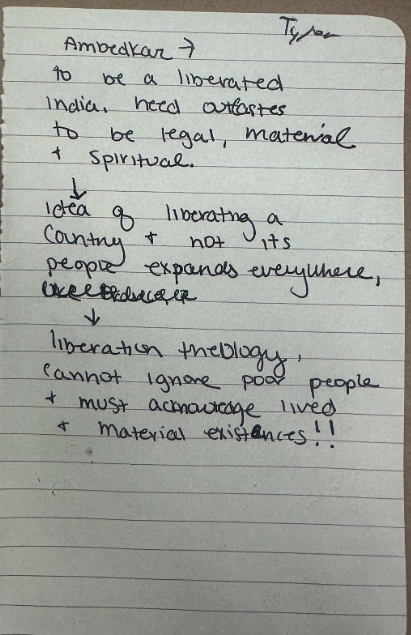
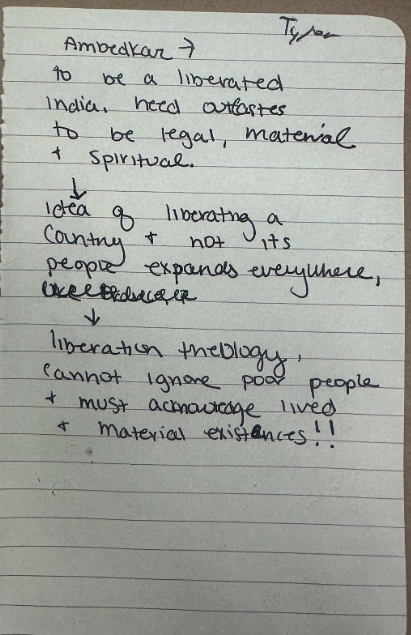

URBS405 Gallery
![" I agree that this is a great reflection. On the point of using your computer vs the notebook,
I found myself with similar hesitancies. Especially when doing readings, I found it much easier to copy and paste interesting sections
from the readings onto an online note. However, what led me to settle for using a notebook for the entire class is how it forces you
to be more sentient about the information you consume, and conscious of every word you read and write. Yes the whole process is more
time consuming, but I feel that the exercise of writing in a notebook has made me more critical of the ideas presented in the readings
and class " ~Nathan Chen](pics/pic1.png)

![" The dichotomy of being " at Penn " versus " of Penn " is central in my life as someone who grew up just
a mile away from the university. As a student here I sometimes feel like I am walking the line between blending
in with other Penn students and staying within the comfortable campus bubble most days but then also going to my
childhood home off campus and spending time in my community as a community member and not a Penn student. I strive to
be intentional in not being " of Penn, " working to give back to my community not just through temporary service initiatives
but a meaningful commitment to a lifetime of service. " ~Faith Applegate](pics/pic20.png)
![" This is something I've thought a lot about too and I think what brings us to hermeneutics and understanding the layers
of interpretation - I think there's been a lot of recent emphasis on self-awareness when it comes to bias and how that impacts
personal interpretation, but how far back do you have to go to get to pure, original thought? Narrow worldviews from all kinds of
backgrounds have been dictating how we read and understand text for centuries, so it takes a lot more than a reflection on individual
biases to get to the root of what was originally intended by the writing (our conversation with Hal helped develop these ideas, as well).
" ~Sophia Leung](pics/pic7.png)
![" I'd tend to agree with you. Another notion of an idea being " sacred " also has to do with popularity of an idea.
That is, a popular sacred belief would be much more difficult to change than an unpopular sacred belief. It comes to me,
how do we analyze sacred beliefs from a popularity standpoint? Does a sacred belief that is popular make it any more or less sacred?
I would think no. I like the point of how changing some sacred beliefs from religion would fundamentally change the religion altogether.
It would be interesting to fully investigate the intersection of sacred beliefs between all religions. " ~Ishaan Lal](pics/pic8.png)

![" I have similar questions about New Zealand, where recent political and social events have made the future far
less certain than it once was. With political fluctuations and rising crime, people are increasingly worried about the
what the future entails. However, think we were able to see a glimpse into an avenue of change recently when Posie Parker,
a right-wing anti-trans right activist, came to our shores. She had tomato sauce thrown at her, was heckled wherever she went,
and was ultimately booed out of the country. Whilst this might be viewed as a toy example, power ultimately, does lay in the hands
of the people, and with enough provocation and dissatisfaction, citizens coming together have the power to shape the values and actions
of a country. " ~Nathan Chen](pics/pic21.png)


 


 

asdfasdfasdf
About Us
URBS 4050, Spring 2023
On a dark evening in late January, a group of students gathered together on the third floor of McNeil Building at the University of Pennsylvania. Professor Andrew Lamas walked through the doors, and his first words spoken to the class were: "this is not going to work". It was then that began the transcendence of us students' ability to understand the world, as we spent the next hours discussing the implicit hierarchy found in a classroom's layout where tables are aligned in rows instead of a circle. The rest of the semester was filled with similar relevant discussions: from understanding the interpretation of religion throughout the centuries, to learning the different ways of perceiving art, to learning about local currencies, to discussing whom the Earth belongs to.
Our class consisted of 13 diverse students and 1 wise, amazing professor. Us students represented all four schools at UPenn: Arts & Sciences, Engineering, Wharton, and Nursing. The diversity of backgrounds, experiences, and thoughts allowed us all to broaden our minds. It is without doubt that the conversations had and lessons learned throughout the semester are things that will stick with us throughout life.
We dedicate this project to Professor Lamas. Early in the semester, Professor Lamas provided us students with small journals and encouraged us to write down any thoughts we had throughout the semester. This website is a cultivation of a subset of our work -- a conglomeration of some of the most meaningful ideas, thoughts, and images we had.